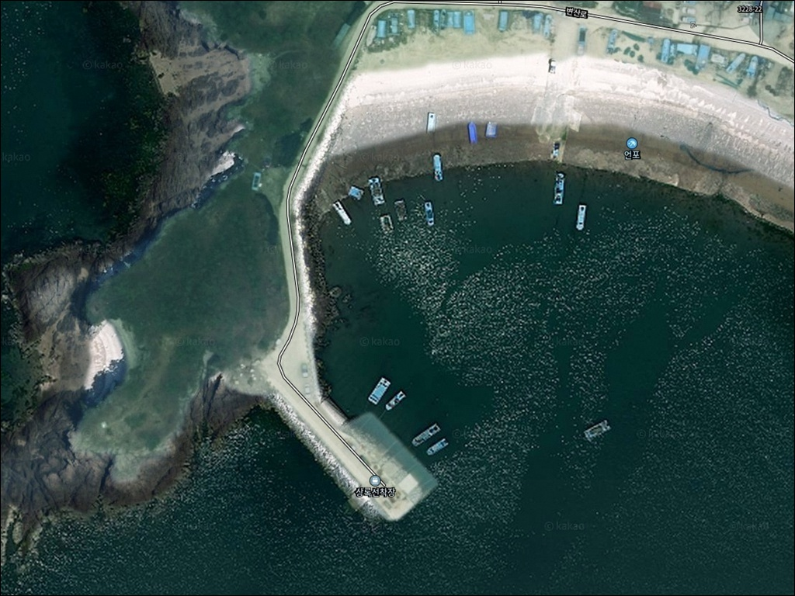
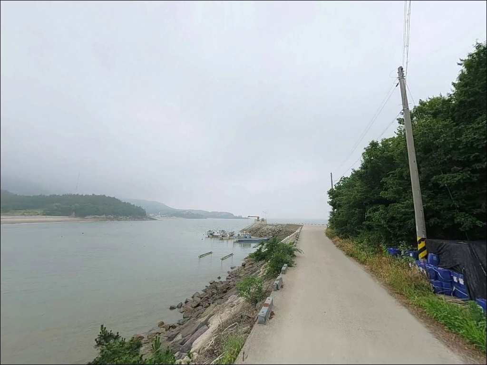
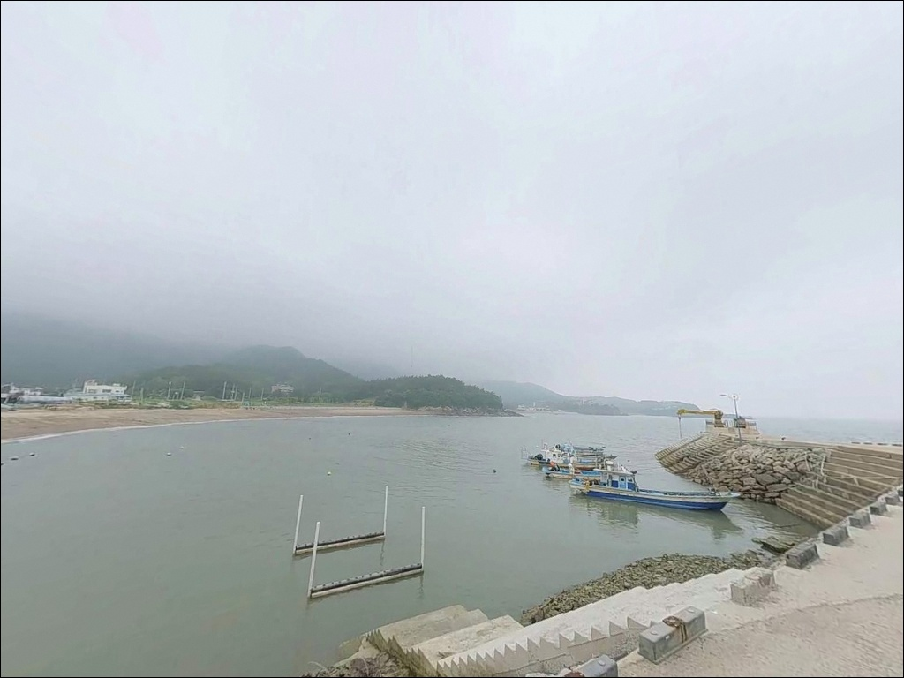
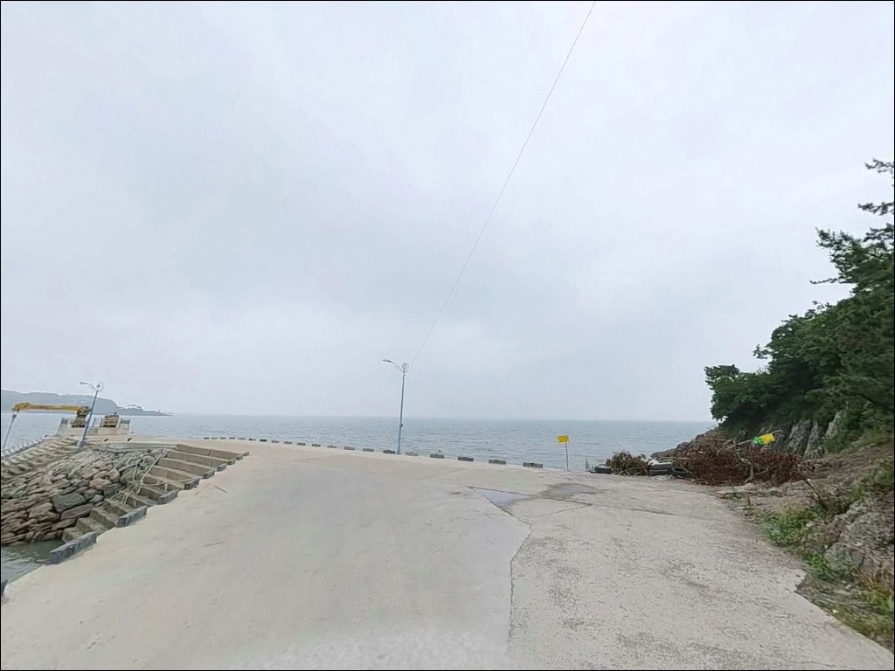
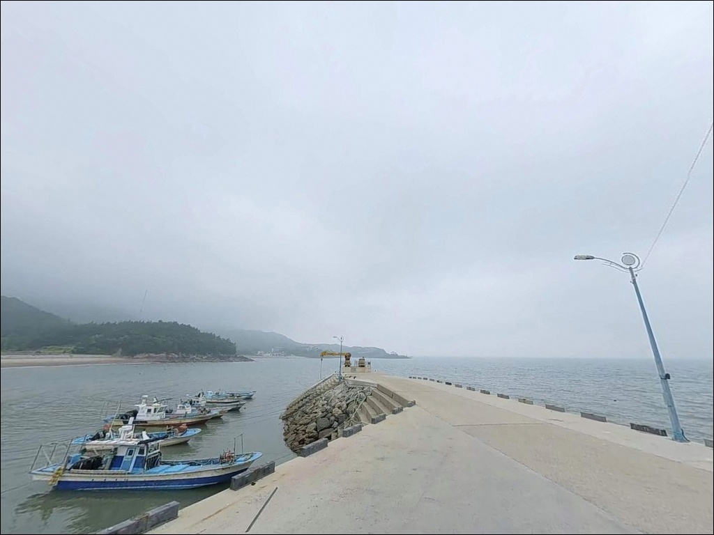
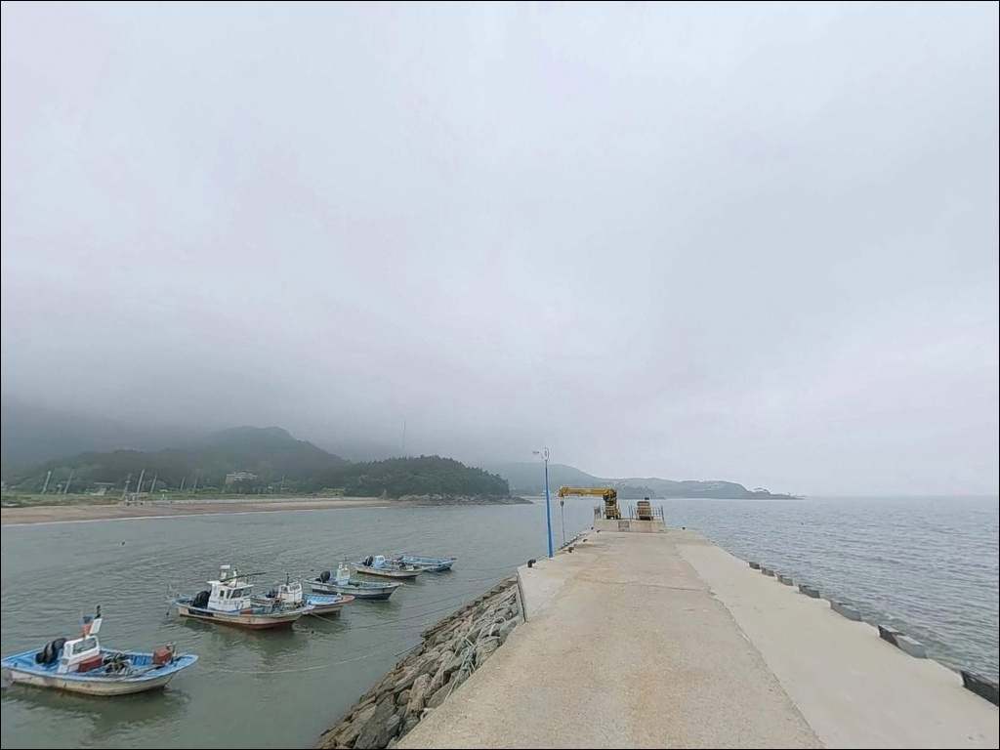
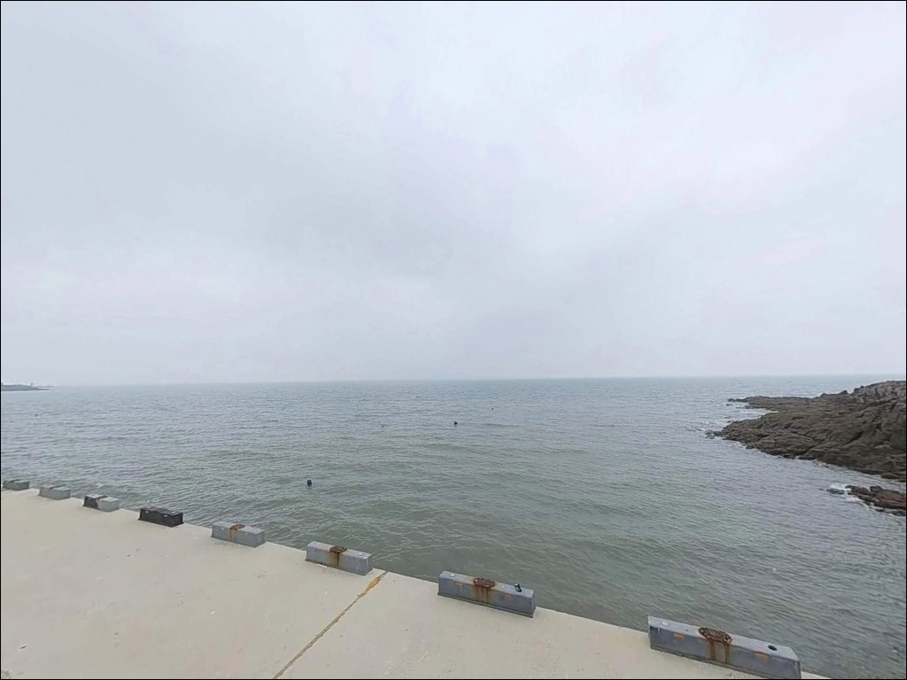
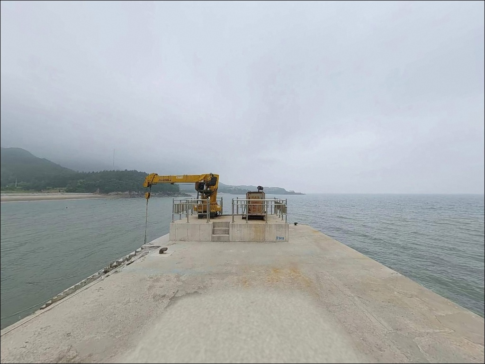
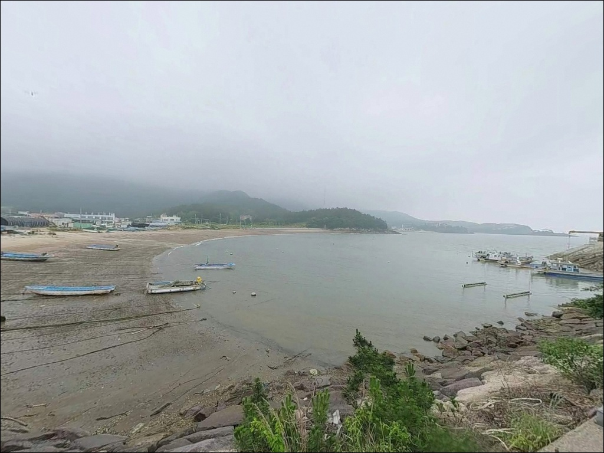

이 페이지에는 광고(제휴 링크 포함)가 있으며, 광고 링크를 통해 구매하면 운영자가 판매 수익 또는 수수료를 받을 수 있습니다. 포인트 사진: 카카오맵 스카이뷰·로드뷰. 이 페이지의 지도·사진 이미지는 카카오맵의 실제 서비스 이미지와 다를 수 있습니다.

상록선착장, 전북 부안군 한적한 분위기 속 차박, 낚시를 함께 하기 좋은 곳
포인트 안내
상록선착장
전북 부안군 변산면 도청리 577-7
상록선착장은 서해 조차가 크게 작용하는 구조라
물때를 확인하지 않고 간조 시간에 도착하면
발밑 수심이 거의 없어집니다.
채비를 아무리 멀리 날려도
조류와 수심이 받쳐주지 않으면
어떤 방식으로도 결과를 만들기 어려운 것이
서해 소규모 선착장 포인트의 공통 조건입니다.
이 글은 상록선착장의 진입 환경, 지형 구조,
물때 기반 낚시 여건에 집중합니다.
조황 단정과 특정 어종 보장은
이 글의 범위에 포함되지 않습니다.

1. 변산해안로에서 선착장까지,
진입 전 알아야 할 것
상록선착장은 변산해안로(30번 국도)에서
상록해수욕장 방향으로 분기되는 도로를 통해
접근하는 구조입니다.
선착장으로 들어가는 마지막 진입로는
차량 교행이 쉽지 않은 폭으로 이루어져 있으며,
어민 작업장과 어선 계류 공간을 공유하는
소규모 포구 형태입니다.
중형 이상 차량이라면 출발 전에
위성지도로 진입로 구조를 먼저 확인하는 것이
현장에서 당황하지 않는 방법입니다.
선착장 끝단 회차 공간도 제한적이어서
루프탑 장비나 대형 SUV라면
갓길 여건과 후진 진출 가능 여부를
함께 살펴두는 편이 좋습니다.
선착장 바로 앞 공간에 주차하는 경우
어선 이동 동선과 어구에 방해가 되지 않는
자리 선택이 우선입니다.
여유 있는 주차를 원한다면
인접한 상록해수욕장 공식 주차장을 기점으로 삼고
도보로 이동하는 방안이 현실적입니다.

2. 국립공원 경계 안에서의 차박 여건
상록선착장이 위치한 도청리 일대는
변산반도국립공원 외변산 구역에 포함됩니다.
국립공원 지정 구역 내에서는
별도로 허가되지 않은 장소에서의
야영·취사가 원칙적으로 제한되므로,
차박 체류를 계획하고 있다면
출발 전에 관할 기관에 먼저 확인하는 것이 순서입니다.
포인트 자체는 상록해수욕장과 인접해 있어
여름철 성수기에는 유동인구가 상당합니다.
선착장 주변은 어민 작업이 이루어지는 공간이어서
조용한 야간 체류를 기대하기에는
프라이버시 여건이 낮은 편입니다.
낚시 후 하룻밤 조용히 머무는 용도보다는
당일 낚시 위주로 운용하는 편이 현실적입니다.
차박 위주로 방문을 계획한다면
국립공원 내 지정 야영장인
고사포해수욕장 야영장을 기점으로 삼고
상록선착장을 낚시 포인트로 병행하는 동선이
더 여유 있는 선택입니다.


3. 주변 편의시설과 인프라 동선
상록선착장 인근에서 확정된 편의시설은
인접한 상록해수욕장 기준으로 파악됩니다.
공중화장실과 공식 주차장이 갖춰진
관광지 기반의 해수욕장으로,
낚시 전후 기본 편의는
이쪽을 기점으로 해결하는 편이 효율적입니다.
반경 3~4km 거리에는 격포항이 있습니다.
격포항 일대는 변산면의 대표 항구로
식당, 낚시 용품점, 편의시설이
비교적 갖춰진 관광 거점입니다.
낚시 소품이나 미끼, 얼음 등은
격포항 방면에서 출발 전에 준비하고
상록선착장으로 이동하는 것이 현실적입니다.
응급 상황 발생 시
대형 의료 인프라까지는 거리가 있습니다.
연료·비상약품·식수 등
기본 자급 물품은 출발 전에 갖추는 것이
서해 원거리 포인트 방문의 기본 원칙입니다.

4. 물때가 먼저인 서해안 포인트 준비법
상록선착장 방문에서 가장 먼저 확인할 것은
물때입니다.
서해안은 조석 간만의 차가 크게 작용하는 해역이며,
선착장 구조물 높이가 상당한 편이어서
간조 시에는 발밑 수심이 크게 낮아집니다.
바다타임에서 도청리 기준 물때를 확인하고
들물 전후 또는 만조 전후를 기준으로
도착 시각을 계획하는 것이 기본 전략입니다.
서해안은 안개와 강풍의 변화가 빠른 편입니다.
기상청 해상 예보는 출발 당일 아침에
한 번 더 확인하는 것이
헛걸음을 막는 조건입니다.
소형 선착장 구조상 암초나 구조물 경계에서
채비 손실이 있을 수 있으니,
여분 채비는 넉넉하게 준비하는 편이 좋습니다.
어선이 계류된 선착장 특성상
어선 이동 동선과 계류 로프에
채비가 얽히지 않도록 자리를 잡는 것이
기본 매너입니다.
야간에는 헤드랜턴과 구명조끼를 반드시 챙기고,
외항 계단형 구조물은 이끼가 낄 경우
미끄럼 위험이 있으므로
미끄럼 방지 신발을 갖추는 것이 안전합니다.

5. 외항 계단형 구조가 만드는 낚시 여건
상록선착장의 낚시 구조는
외항 쪽 계단형 콘크리트 방파제가 중심입니다.
선착장 끝단과 배 접안 라인 주변이
수심이 상대적으로 깊어지는 구간이며,
이 구간을 기준으로 공략 자리를 잡는 것이
이 포인트의 기본 진입 방식입니다.
내만 구조 특성상 조류는 강하지 않은 편이지만,
상록해수욕장과 솔섬 사이 해안선 위치 특성상
들물과 썰물 전후 타이밍에는
물길이 모이는 구간에서
조류 소통이 살아나는 편입니다.
서해안 소규모 선착장에서 물때 판단 없이
현장에 도착하는 것은 헛걸음의 가장 흔한 원인입니다.
선착장 주변 해안선에는
기암 구조와 암반 지형이 연결되어 있으며,
수중 구조물 경계와 암초 경계가
탐색 포인트가 됩니다.
바닥은 모래와 뻘이 혼합된 지형으로
원투 채비가 안착하기 좋은 구조입니다.
외항 계단형 구조에서는 만조 전후 타이밍이
낚시 자리의 안전과 조과를 동시에 결정합니다.
최신 조황은 출조 전에 꼭 검색해 보시기 바랍니다.


6. 상록선착장에 어울리는 낚시 스타일
이 포인트에서 지형과 가장 잘 맞는 방식은
원투낚시입니다.
외항 계단부 앞으로 펼쳐진
모래·뻘 혼합 지형은 바닥 어종을 노리기에
적합한 구조입니다.
들물 전후 타이밍에 채비를 멀리 캐스팅해
바닥층을 탐색하는 방식이 이 포인트와 잘 어울립니다.
이 일대 서해안 지형에서 기대해 볼 수 있는 어종으로는
우럭, 노래미, 광어, 붕장어 등이 있습니다.
루어낚시는 해 질 무렵부터 야간 시간대에
외항 끝단 계단부에서 시도해볼 만합니다.
선착장 끝단과 암초 경계 구간에서
소형 메탈 지그나 지그헤드 채비로
수심 변화를 천천히 탐색하는 방식이
이 구조에 맞는 운용법입니다.
농어와 우럭이 이 지형에서 기대해볼 수 있는 어종입니다.
찌낚시는 내항 쪽 구조물 주변이나
잔잔한 수면이 유지되는 구간에서
가벼운 채비로 시도해볼 수 있습니다.
가을철에는 갑오징어 에깅도
외항 계단부에서 노려볼 수 있는 방식입니다.
에깅이란 갑오징어·무늬오징어를 대상으로
에기(인조 미끼)를 사용하는 루어낚시 방식입니다.

7. 격포항과 궁항, 플랜B 동선
상록선착장 조류 조건이 여의치 않거나
주차 공간을 확보하지 못했을 때
첫 번째 대안은 격포항 방파제입니다.
상록선착장 북쪽으로 약 4km 거리에 있으며,
방파제 구조가 크고 외항·내항 구분이 명확해
다양한 낚시 스타일로 운용할 수 있습니다.
진입과 주차 여건도 비교적 안정적이어서
상록선착장이 여의치 않을 때
가장 빠르게 전환할 수 있는 포인트입니다.
궁항 방파제도 같은 해안선 위에
가까운 거리로 위치해 있습니다.
테트라포드와 내항 석축이 발달한 구조로
다양한 자리를 잡을 수 있어
상록선착장과 병행해 탐색하기 좋습니다.
격포항을 기점으로 삼고
상록선착장과 궁항을 함께 돌아보는 동선이
이 권역을 가장 효율적으로 활용하는 방법입니다.
차박 위주라면
남쪽으로 약 2~3km 거리에 있는 모항항을
함께 검토해볼 수 있습니다.
조용한 소형 항으로 알려져 있으며,
방파제와 선착장을 갖추고 있어
낚시와 야간 체류를 함께 계획하는 방문자에게
대안 후보가 됩니다.

조용한 변산 내만에서 낚시하려면,
물때 준비가 먼저입니다
원투낚시나 루어낚시를 기반으로
한적한 소규모 선착장 포인트를 찾는 낚시인이라면
상록선착장의 외항 계단형 구조는
잘 맞는 지형입니다.
격포항이나 궁항처럼 알려진 대형 포인트보다
방문자가 적고,
물때만 잘 맞추면
여유 있게 자리를 잡을 수 있는 조용한 포인트입니다.
반면 물때 확인 없이 간조 시간에 도착하거나,
대형 차량으로 사전 답사 없이 진입을 시도하면
현장에서 낭패를 보기 쉬운 구조입니다.
물때 확인, 진입로 사전 점검, 자급 준비,
이 세 가지를 갖추고 간다면
변산반도 해안에서 기억에 남는
낚시 포인트가 될 수 있는 곳입니다.
차박까지 함께 계획하는 방문자라면
국립공원 야영 구역 확인을 선행하고,
고사포해수욕장 야영장 같은
지정 시설을 기점으로 삼은 뒤
상록선착장을 낚시 포인트로 연계하는 동선이
가장 여유 있는 변산 바다 일박 낚시 여행의 틀이 됩니다.